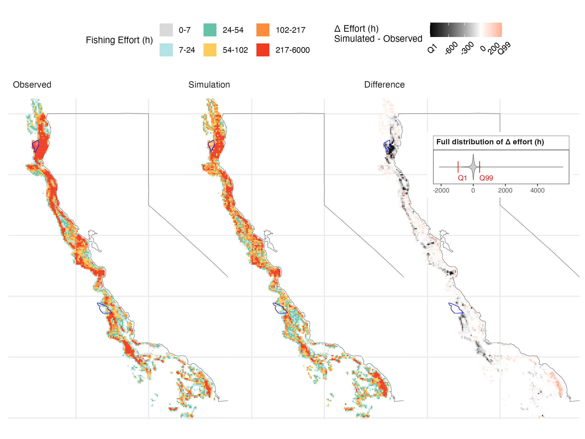
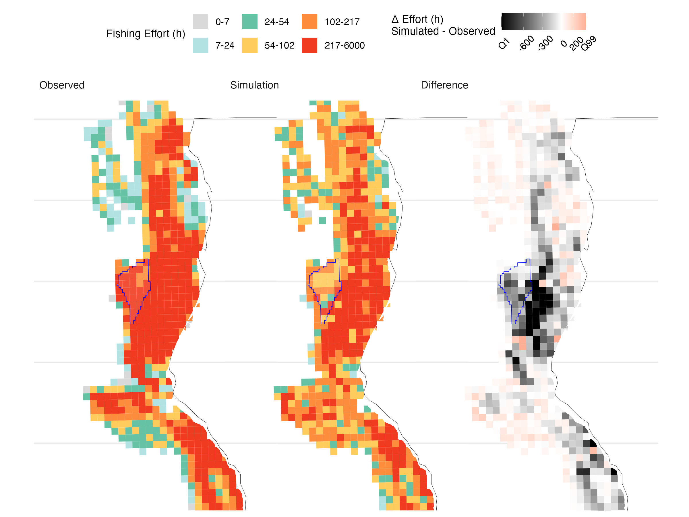
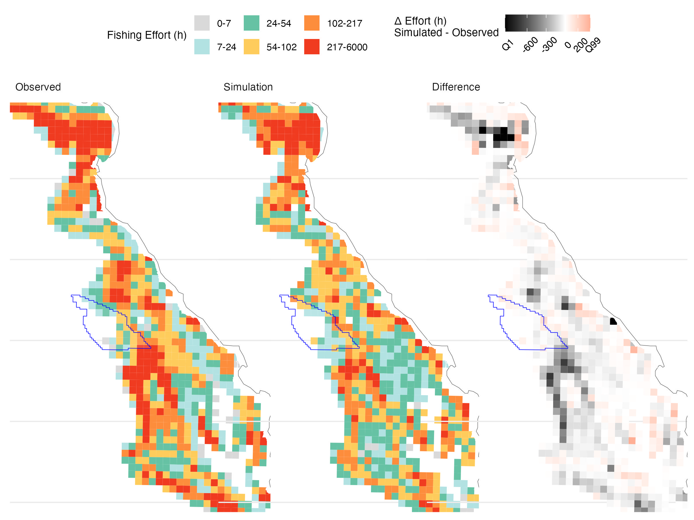
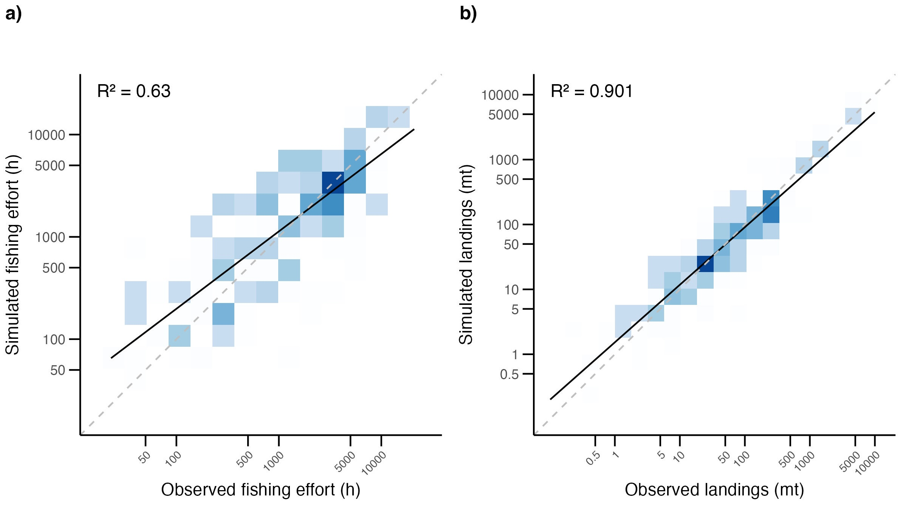
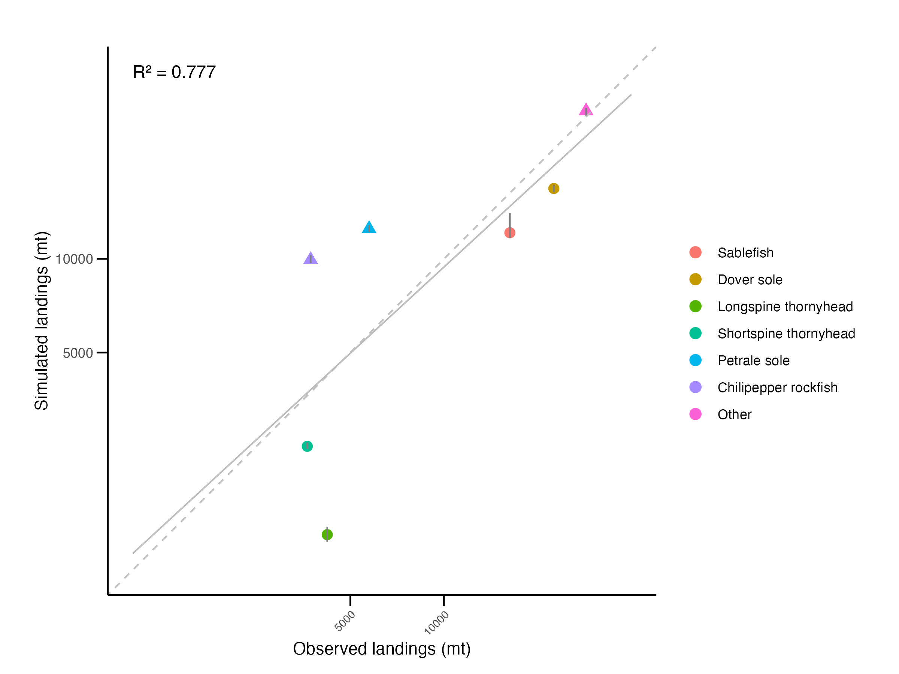
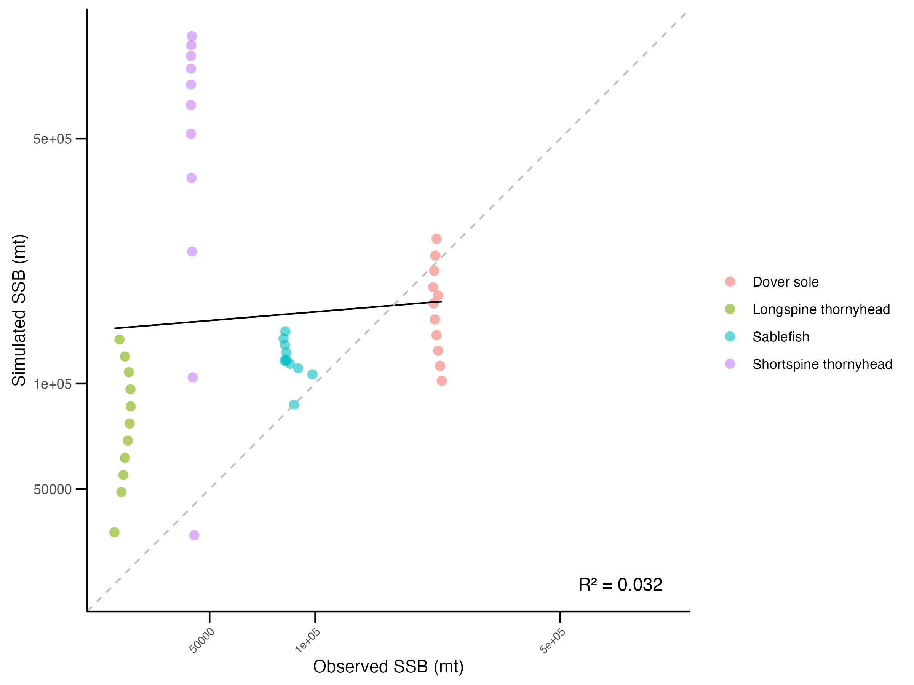

loglike_dis_baseline_output <- generate_loglike_dis_baseline_output(
displace_outputs_path, # Path where outputs are stored
table_spp, # Table of species incldued in the analysis available in raw_inputs/POPULATIONS
implicit_ssp = c("EOJ", "SGO", "OTH") # Implicit species code
)5 Results
This section presents the preliminary outputs of our case study using actual data (not available in this repository), rather than those generated from the example dataset. The example data cannot be used for testing and discussing validation and optimization since it does not reflect real conditions, consists of mock data, and does not include replicates. However, we provide the code required to generate such outputs, which can be adapted by users to their own VMS and landing receipt data.
Here, we present results for model validation as well as results from our case study exploring the impact of offshore wind development lease areas.
5.1 Read output files
The following functions in r/functions_validations.R read and preprocess DISPLACE output files, whether or not the analysis includes replicates:
- Process
loglikefiles (logbook-like) that emulate landing receipt data:
- Process spatial fishing effort output files:
fe_dis_baseline_output_sf <- generate_fe_dis_baseline_output(displace_outputs_path) # Path where outputs are stored- Process population model output files:
popstats_dis_baseline_output <- generate_popstats_dis_baseline_output(
displace_outputs_path, # Path where outputs are stored
pop_names # pop_names.txt content from raw_inputs/POPULATIONS
)5.2 Model validation
We conducted a hindcasting exercise by running 30 replicates of the DISPLACE model over a 14-year historical period, using inputs representative of that timespan. Using the outputs of these simulations, we assessed model performance by comparing simulated outputs with observed metrics derived from the merged dataset.
5.2.1 Fleet model validation
We assess model performance in predicting aggregate fishing effort (hours), catch, and number of trips across the full analysis period.
As shown in Table 5.1, for our case study, fishing time is slightly underpredicted (−5.9%), while total catch and number of trips closely match observations (+1.0% and 0.2%, respectively). In contrast, the model overestimates time at sea (+21%) and total distance traveled (+61%).
To reproduce this table, adapt the summary_report_table function in r/functions_validations.R to your data.
generate_summary_report_table(
loglike_dis_baseline_output, # Processed loglike outputs
filtered_vmstix_data # Merged VMS and landing receipt data
)| Metric | Observed | Simulated | Difference…. |
|---|---|---|---|
| Fishing time (h) | 593,050 | 557,916 ± 3,728 | -5.9 ± 0.6 |
| Total catch (mt) | 84,466 | 85,296 ± 348 | 1.0 ± 0.4 |
| Number of trips | 39,115 | 39,195 ± 62 | 0.2 ± 0.2 |
| Time at sea (h) | 826,557 | 1,001,390 ± 4,179 | 21.2 ± 0.5 |
| Distance traveled (km) | 5,016,851 | 8,079,615 ± 16,945 | 61.0 ± 0.3 |
We can also visually inspect differences between simulated and observed spatial distributions. To do so, adapt the fe_displace_maps_rule3_report_figures function to your data.
generate_fe_displace_map_report_figures(
fe_dis_baseline_output_sf, # Processed spatial fishing effort output file
vms_cumtime_leaseblock_vessel, # Observed spatial fishing effort input data
blocks_shore_eez_file, # Grid file to which you want to clip the data (raw_data/GRAHP/shp/spatial_grid)
rule_3 = TRUE, # Activate to hide cells with less than 3 vessels
mask_3rule, # Layer to clip out rule3 cells
closure_areas_file, # Closure area file path
filtered_matched_vmstix # VMS resulting from merging the VMS and landing receipt data
)Using our case study data, the simulation reproduces the main patterns of fishing activity along the California coast, with high-effort areas in Northern and Central California aligning well with observed VMS data. Some discrepancies remain, particularly offshore and along parts of the central and northern coast, where effort is underpredicted.
Over the 14-year validation period, the model captures the broad spatial structure of accumulated fishing effort, supporting its use for scenario analysis (Figure 5.1). However, it underpredicts effort within the OSW lease areas—by 70% in Humboldt and 47% in Morro Bay (Table 5.2, Figure 5.2, Figure 5.3). While absolute magnitudes may be off, projections remain informative for comparing relative trends across scenarios, the goal of our analysis.

| Lease.area | Observed.fishing.time..h. | Simulated.fishing.time..h. | Difference…. |
|---|---|---|---|
| Humboldt | 9,726 (1.64%) | 2,944 ± 74 (0.69 ± 0.02%) | -69.7 ± 0.8% |
| Morro Bay | 1,432 (0.24%) | 760 ± 61 (0.18 ± 0.01%) | -46.9 ± 4.3% |


We can evaluate the model performance by comparing simulated total fishing effort (hours) and landings (metric tonnes) with observed values for each single vessel using generate_vessels_level_fit_plots_report_figures function.
generate_vessels_level_fit_plots_report_figures(
loglike_dis_baseline_output, # Processed loglike outputs
filtered_matched_vmstix, # VMS resulting from merging the VMS and landing receipt data
filtered_tix_data_from_merge, # Landing receipt data resulting from merging the VMS and landing receipt data
vessels_id_mapping # Mapping dataframe original vessel ids with those from DISPLACE
)Results show reasonable alignment in fishing effort across the fleet (Figure 5.4, a), with most points near the 1:1 line (R² = 0.63). The model tends to underestimate effort for the highest-effort vessels and slightly overestimate at the low end. Simulated landings match observed landings closely (Figure 5.4, b), with strong performance (R² = 0.90). Most points fall near the 1:1 line, indicating the model effectively captures the magnitude and distribution of landings across vessels.

We can also assess the fit of aggregated landings by target species by comparing simulated and observed values using the generate_overall_landings_fit_plot_report_figures function.
generate_overall_landings_fit_plot_report_figures(
loglike_dis_baseline_output, # Processed loglike outputs
filtered_tix_data_from_merge, # Landing receipt data resulting from merging the VMS and landing receipt data
explicit_sp = c('sablefish', 'dover', 'thornyhead')
) Disaggregating by species shows good overall agreement between simulated and observed total landings (Figure 5.5, R² = 0.78). However, the model tends to overestimate implicitly defined groups (chilipepper rockfish, petrale sole, “other”) and underestimate explicitly defined DTS species, reflecting differences in population parameterization and pointing to areas for future refinement.

5.2.2 Population model validation
To assess the biological model’s performance, compare simulated SSB outputs to those from the stock assessments. Adapt the generate_ssb_fit_plot function to check this.
generate_ssb_fit_plot(
stock_assessment_data_folder, # Folder where SSB stock assessment data is located
popstats_dis_baseline_output$agg_pop_stats_year_sim # Processed popstats outputs
)Here we compared estimates of spawning stock biomass (SSB) from 2010-2023 from the stock assessments with the SSB time series generated through the 14 year DISPLACE simulation (Figure 5.6). We found that the initial SSBs in DISPLACE closely mirrored those of the assessment. Small differences arise due to the large differences in the length bins implemented in DISPLACE compared to those assumed in the stock assessments. DISPLACE uses 13 evenly sized length bins that are identical across all four species despite their differences in size. On the other hand, the stock assessments assume much more resolved length bins (1 to 2 cm) with maximum lengths tailored for each species. This leads to differences in the resolution of the numbers at length, the weight at length, and the maturity at length, leading to differences in the calculation of SSB.
Although these initial differences are small, they amplify as the population grows through the coarse DISPLACE length bins. As a result, we judged this comparison to not be useful validation of the biological model. The fact that the DISPLACE simulations generate the right amount of catches from the right amount of effort is a better validation of the performance of the biological model.
